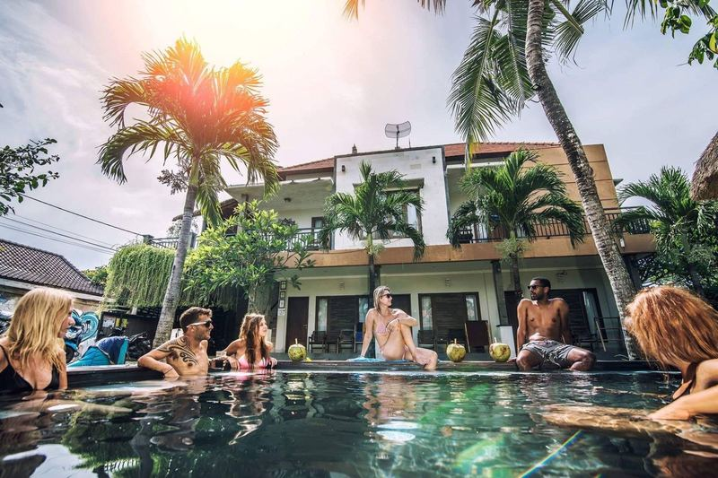
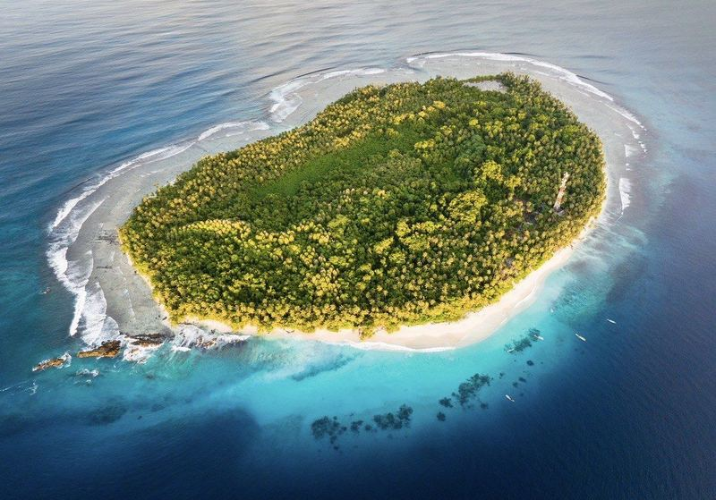
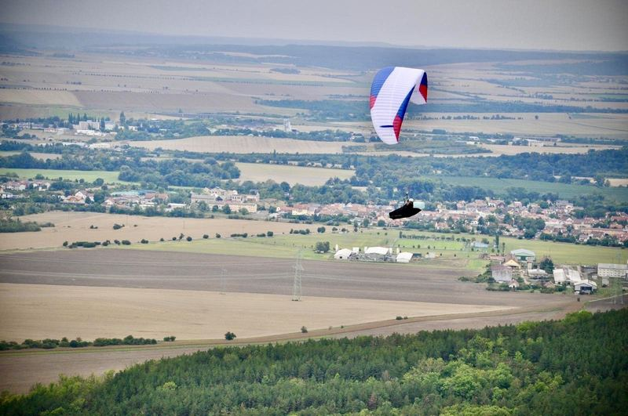
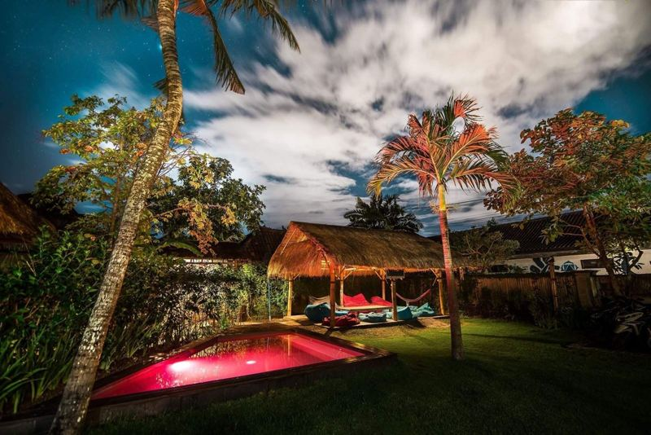
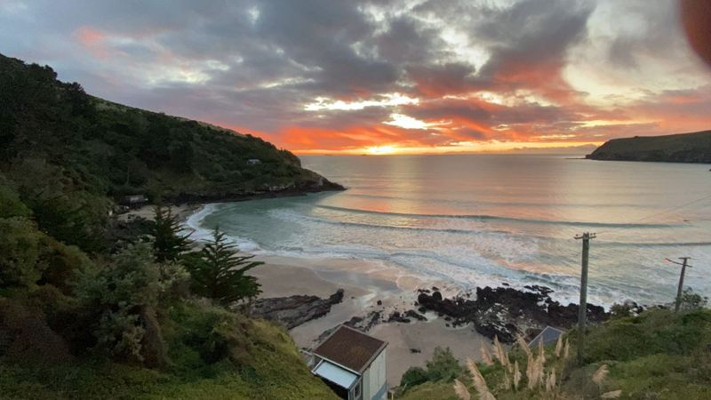

Zorientovat se tam, kde nejsou pravidla
Jak se lidé a firmy učí v prostředí, kde přestal platit starý návod. Od surfu s jednou rukou po firmy, které se učí pracovat s AI.
Přednáška: Bez návoduKeynote · podcast · firmy a školy
 Ostrava · 2026
Ostrava · 2026
Přizpůsobit se dá naučit. Já to dělám celý život.
Surfuju s jednou rukou. Byl jsem čtvrtým člověkem ve Slevomatu, deset let jsem vedl hotel na Bali, řídil ostrov u Sumatry a řešil krizi kvality v korporátu na druhém konci světa. Ani jedna z těch věcí neměla návod. Pokaždé jsem si ho musel napsat sám. Dnes pomáhám firmám zvládnout AI. Ta návod nemá taky.









Zvenku to vypadá jako řada extrémů. Ve skutečnosti je to pořád stejný vzorec: přijdu tam, kde nikdo neví, jak na to, a musím na to přijít. Každá kapitola stojí na té předchozí.
Narodil jsem se s přetrženými nervy v rameni. Ruku jsem rozpohyboval díky Vojtově metodě a rodičům. Plnou hybnost nemá dodnes.
Pravidlo 01Omezení mění techniku, ne cíl.
Ve 23 letech jsem založil Custom Boards s výrobou v pěti zemích. Pak jsem byl čtvrtým zaměstnancem Slevomatu, prvního českého slevového portálu. Rozjížděli jsme v Česku úplně nový byznys.
Pravidlo 02Nový trh se nedá opsat. Musí se postavit.
Odešel jsem z Evropy, abych mohl surfovat každý den. Pětkrát jsem startoval na mistrovství světa a deset let vedl hotel Riviera House.
Pravidlo 03Když návod neexistuje, napíšu si vlastní.
Devět měsíců krizového řízení, logistiky a bezpečnosti na moři. Dvě záchranné mise proti bouřce do nemocnice přes 30 hodin daleko. Obě dopadly dobře.
Pravidlo 04Rozhodnout se je odpovědnost, ne pohodlí.
Covid mi vzal hotel i neziskovku Adapted. Začal jsem znovu, uvnitř jedné z největších outdoorových firem Austrálie a Nového Zélandu.
Pravidlo 05Nestavět věci na jednom člověku. Víc o Kathmandu ↓

Vedu Enter a na VŠEM učím obor Agentic Company. Předávám to, co jsem se naučil ve všech předchozích krocích.
Pravidlo 06 · co předávámNejdřív lidé a proces, pak technologie.
Po covidu jsem začínal znovu. Z vlastního hotelu na Bali do centrály burzovní firmy na Novém Zélandu. Ani na tohle nebyl návod, tak jsem si ho napsal: procesy, data, týmy na třech kontinentech.


Jako Quality Coordinator v centrále v Christchurchi jsem řešil jeden z nejsložitějších problémů s dodávkami ze zahraničí. Týkal se hero produktu, na kterém stála podstatná část tržeb napříč portfoliem.
Ve velké firmě rozhodují procesy, data a schopnost vidět celý systém. Přesně to dnes přenáším do firem s Enterem.
Zdroje o firmě: Wikipedia, výroční zpráva KMD Brands FY26
Tři pravidla z vlastní kůže, ne z učebnice. Každé je téma přednášky, rozhovoru nebo workshopu.
Jak se lidé a firmy učí v prostředí, kde přestal platit starý návod. Od surfu s jednou rukou po firmy, které se učí pracovat s AI.
Přednáška: Bez návoduKeynote · podcast · firmy a školy
Co mě o vedení lidí naučily záchranné mise na ostrově, deset let vlastního hotelu a krize kvality v korporátu.
Přednáška: 30 hodin od nemocniceKeynote · panel · leadership
Jak postavit firmu, kde AI agenti pracují pro lidi. Aby lidé trávili méně času u obrazovek a víc s lidmi a v přírodě.
Přednáška: Agentic CompanyKeynote · workshop · vedení firem
Dva rozhovory, dvě strany téhož příběhu. Jak firmy zvládají transformaci s AI a jak se dá naučit surfovat bez zdravé ruky.
Jak se zorientovat, rozhodnout a vést lidi ve chvíli, kdy stará pravidla přestanou platit. Skutečné příběhy z oceánu, ostrova a korporátu. Žádné poučky ze slajdů.
Milo Brzák celý život vstupuje do prostředí bez návodu. Je zakladatel firmy Enter a pedagog oboru Agentic Company na VŠEM. Surfuje s jednou rukou a pětkrát startoval na mistrovství světa v adaptive surfingu. Deset let vedl vlastní hotel na Bali, devět měsíců řídil ostrov u Sumatry a pracoval jako čtvrtý zaměstnanec Slevomatu a na Novém Zélandu v centrále Kathmandu. Mluví česky i anglicky o adaptaci, odpovědnosti a o tom, jak zavádět AI, aby sloužila lidem.
Vyrůstal jsem v zemi, kde komunistický režim lidi s handicapem dlouho odsouval na okraj společnosti. To stigma se překonává, ale zmizelo zdaleka ne. Proto teď znovu stavíme Adapted a hledáme partnery v Česku i v zahraničí.
Prošel jsem si sebevraždou svého bratra. Naučilo mě to být tady a teď a dělat věci, které dávají smysl. Pomohla mi vipassana, meditace a práce s dechem.
Pokud procházíte něčím těžkým, zavolejte na Linku první psychické pomoci 116 123, nonstop a zdarma.
Potřebujete pro své lidi někoho, kdo si prošel prostředím bez návodu a umí o tom mluvit? Napište datum, místo, formát a publikum.